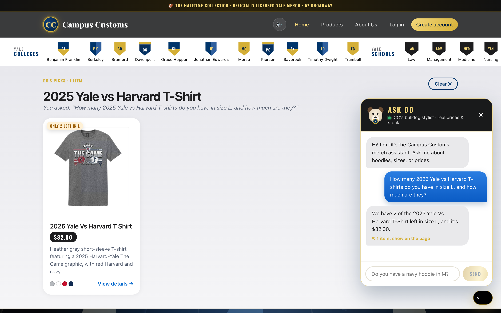
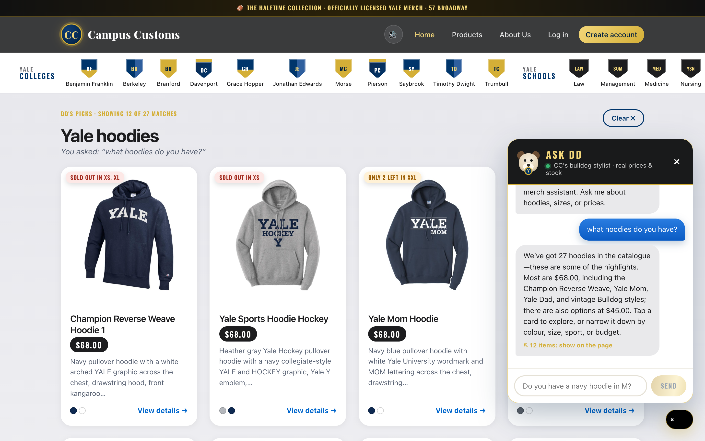
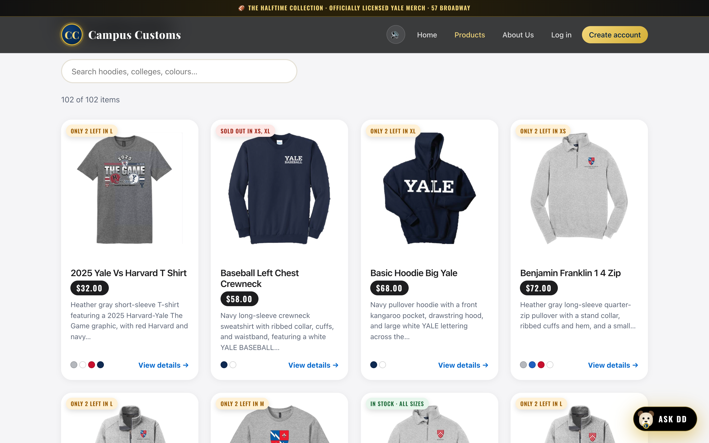
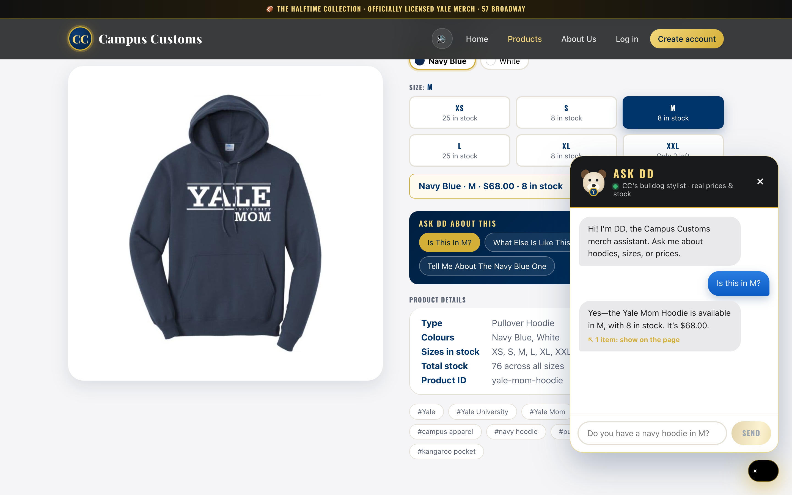
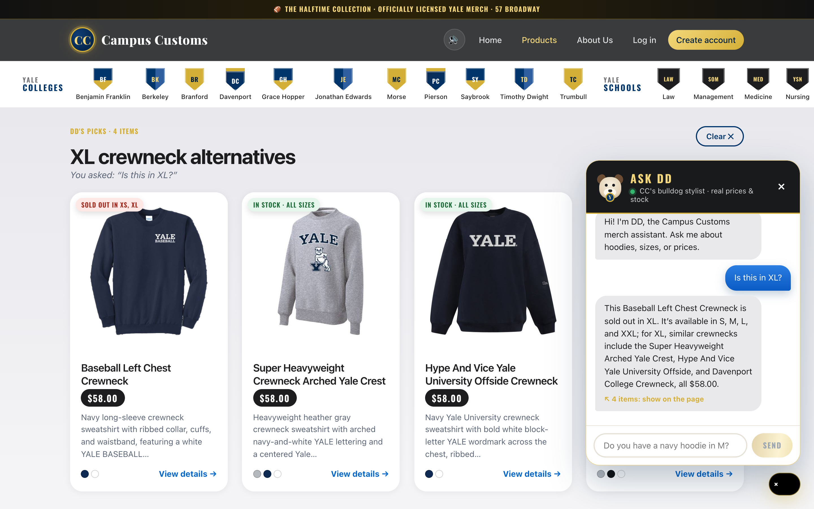
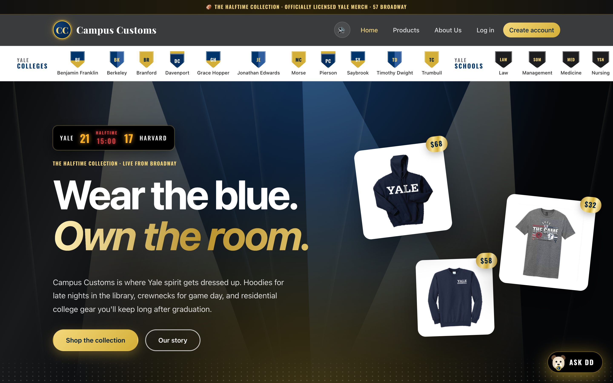

1. Chat checks the inventory level of an item
Required: chat checking the inventory level of an item, with honest stock and price from the database.

check_size_stock tool) instead of guessing.| Database check | SQLite value | Shown in app | |
|---|---|---|---|
inventory.quantity for 2025-yale-vs-harvard-t-shirt, size L | 2 | "2 … left in size L" | ✓ match |
catalogue.price | 32.0 | "$32.00" | ✓ match |
2. Dynamic search-result cards after a category question
Required: dynamic search-result cards appearing after a category question such as "what hoodies do you have?".

search_products tool returned structured matches, and a "DD's picks · Showing 12 of 27 matches — Yale hoodies" panel appeared on the page with product cards (image, name, price, short description; each opens its detail page). DD's reply gives the real total of 27 hoodies, and the prices match the catalogue ($68.00 / $45.00).| Database check | SQLite value | Shown in app | |
|---|---|---|---|
Products whose garment_type is a hoodie | 27 | "Showing 12 of 27 matches", "27 hoodies" | ✓ match |
3. Problem 9 usability feature: stock badges on product cards
Front-end improvement chosen in Problem 9: availability shown on every card before clicking.

inventory rows: "Only 2 left in L", "Sold out in XS, XL", "Only 2 left in XL", or "In stock · all sizes". Shoppers see availability at a glance, and honest low-stock signals help sales.| Card | SQLite inventory | Badge | |
|---|---|---|---|
| Baseball Left Chest Crewneck | XS = 0, XL = 0 | "Sold out in XS, XL" | ✓ match |
| Basic Hoodie Big Yale | XL = 2 | "Only 2 left in XL" | ✓ match |
4. Problem 9 usability feature: "Ask DD about this" button
Front-end improvement chosen in Problem 9: one-tap questions about the product being viewed.

5. Problem 9 usability feature: sold-out size → find alternatives
Agent improvement chosen in Problem 9: turn a sold-out dead end into a sale.

find_alternatives tool and shows "XL crewneck alternatives": similar $58.00 crewnecks that are in stock in XL.The other agent improvement, remember the shopper's size, was tested through the API with a logged-in account: after "I usually wear a medium and I love navy", DD saved size = M, colors = ["navy"] in customer_preferences. On the Yale Mom Hoodie page, "is this in stock for me?" was answered with "your usual medium is in stock … 8 available, $68".
6. Storefront overview (home page)
Context: the styled CC storefront these checks ran on.
